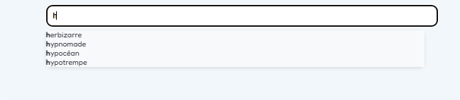
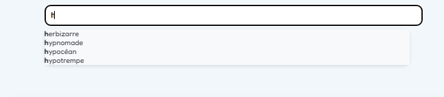

Projet Pokémon — Blog interactif
Ce projet a été réalisé en binôme dans le cadre d’un cours de développement. Nous avions carte blanche sur le choix du sujet, à condition d’intégrer au moins deux bases de données. Notre objectif était de créer un blog interactif sur le thème Pokémon, avec un système d’authentification, une recherche prédictive, un chat en ligne, et un système d’expérience pour les utilisateurs.
Télécharger la maquetteNous souhaitions que chaque utilisateur puisse se connecter ou s’inscrire afin d’accéder au site. Les messages publiés devaient être associés à leur nom d’utilisateur. Le système de points et d’évolution était prévu, mais par manque de temps, il n’a pas pu être intégré à la version finale.
Cahier des charges
Le projet s’est déroulé sur une période de deux semaines. Afin d’organiser notre travail, nous avons commencé par la réalisation d’un cahier des charges détaillant les besoins, les objectifs et les contraintes du projet.
Télécharger le cahier des chargesDiagramme de Gantt
Pour planifier nos tâches et suivre notre progression, nous avons créé un diagramme de Gantt permettant d’évaluer le temps alloué à chaque étape du développement.
Télécharger le diagramme de GanttCréation des bases de données
Après la phase de préparation, nous avons conçu nos bases de données selon la structure suivante :
Télécharger le fichier de création des tablesDéveloppement du site
Nous avons commencé par développer la partie authentification et inscription. Les informations étaient enregistrées dans la base de données, et l’accès au site n’était possible que pour les utilisateurs enregistrés.
Ensuite, nous avons mis en place la fonctionnalité permettant de modifier les informations utilisateur. Nous avons utilisé la méthode sessions pour identifier les utilisateurs connectés.
Pour finir, nous avons intégré une barre de recherche prédictive en JavaScript, permettant d’obtenir des informations sur les Pokémon. Nous avons également ajouté un système de chat où chaque utilisateur pouvait poster des messages avec son nom associé.
 

Organisation du projet
Maîtrise d’œuvre : Théo OGER & Benoît Dufour.
Maîtrise d’ouvrage : notre professeur référent.